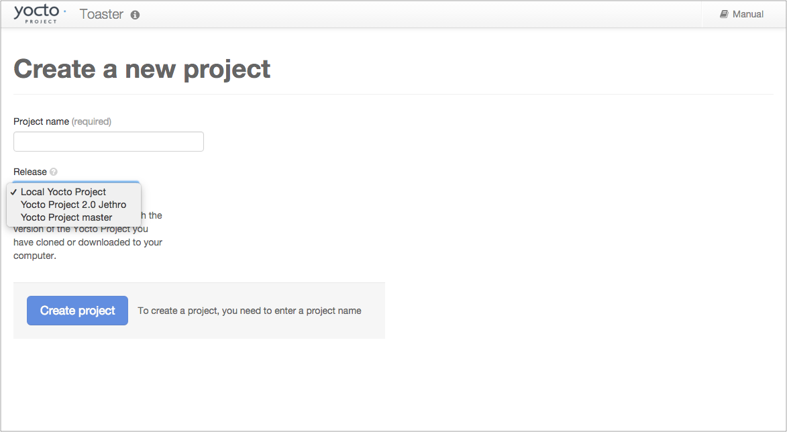
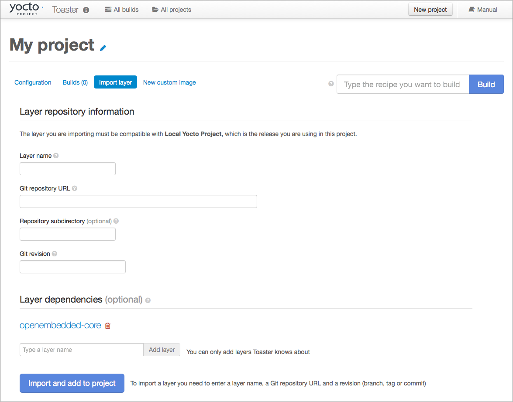
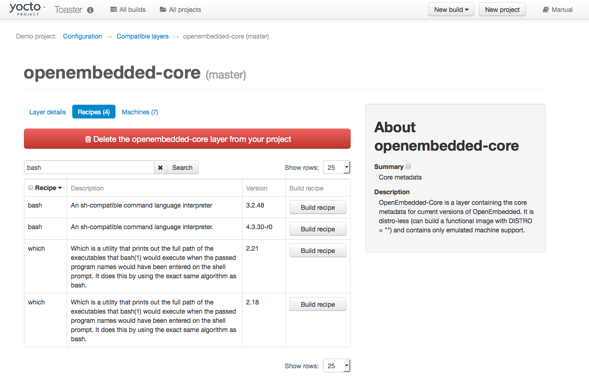
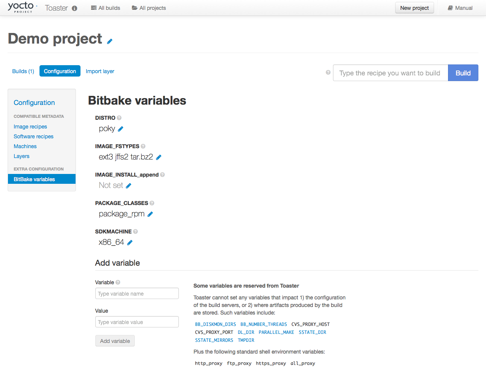

3 Configurazione e Utilizzo di Toaster
3.1 Avvio di Toaster per lo Sviluppo Locale
Dopo aver configurato Yocto Project e installato le dipendenze di sistema di Toaster come descritto nel capitolo "Preparazione all'Uso di Toaster", è possibile avviare Toaster.
Accedere alla Source Directory del progetto (ad esempio, poky):
$ cd poky
Una volta in tale directory, eseguire lo script dell'ambiente di compilazione:
$ source oe-init-build-env
Successivamente, dalla Build Directory (ad esempio, poky/build), avviare Toaster con questo comando:
$ source toaster start
È ora possibile eseguire le build dalla riga di comando o tramite Toaster, come spiegato nella sezione "Utilizzo dell'Interfaccia Web di Toaster".
Per accedere all'interfaccia web di Toaster, aprire il browser di default e inserire quanto segue:
http://127.0.0.1:8000
3.2 Impostazione di Una Porta Diversa
Per default, Toaster si avvia sulla porta 8000. Si può utilizzare il parametro WEBPORT per impostare una porta diversa. Ad esempio, il seguente comando imposta la porta su "8400":
$ source toaster start webport=8400
3.3 Configurazione di Toaster Senza un Server Web
È possibile avviare un ambiente Toaster senza avviare il relativo server web. Questo è utile per i seguenti scopi:
Acquisire le statistiche di una build da riga di comando nel database di Toaster per un'analisi successiva.
Acquisire le statistiche di una build da riga di comando quando il server Toaster è già in esecuzione.
Avere un'istanza del server web di Toaster che monitora e acquisisce più build da riga di comando, ognuna delle quali viene avviata nel proprio ambiente Toaster "noweb".
I seguenti comandi mostrano come avviare un ambiente Toaster senza avviare il relativo server web, eseguire operazioni con BitBake e quindi arrestare l'ambiente Toaster. Una volta completata la build, è possibile chiudere l'ambiente Toaster. Prima di chiuderlo, tuttavia, è consigliabile attendere qualche minuto per garantire il trasferimento completo delle statistiche di build di BitBake al database di Toaster. Se si dispone di un'istanza separata del server web di Toaster in esecuzione, è possibile monitorare l'avanzamento di questa build da riga di comando ed esaminare i risultati non appena vengono pubblicati:
$ source toaster start noweb
$ bitbake target
$ source toaster stop
3.4 Configurazione di Toaster Senza un Server di Build
È possibile avviare un ambiente Toaster con la funzione "New Projects" disabilitata. Questa opzione è utile per i seguenti scopi:
Condividere i risultati delle build sul server web, impedendo al contempo ad altri di avviare build sul proprio host.
Consentire che solo le build locali da riga di comando vengano acquisite nel database di Toaster.
Utilizzare il seguente comando per configurare Toaster senza un server di build:
$ source toaster start nobuild webport=port
3.5 Configurazione dell'Accesso Esterno
Per si associa all'indirizzo di loopback (ovvero localhost), che non consente l'accesso da host esterni. Per consentire l'accesso esterno, utilizzare il parametro WEBPORT per aprire un indirizzo che si connetta alla rete, in particolare l'indirizzo IP utilizzato dalla scheda di rete per connettersi alla rete. È anche possibile associarsi a tutti gli indirizzi IP supportati dal computer utilizzando la scorciatoia "0.0.0.0:port".
L'esempio seguente si collega a tutti gli indirizzi IP dell'host:
$ source toaster start webport=0.0.0.0:8400
Questo esempio si collega a uno specifico indirizzo IP sulla scheda di rete dell'host:
$ source toaster start webport=192.168.1.1:8400
3.6 La Directory per la Clonazione dei Layer
Toaster crea una directory _toaster_clones all'interno della Source Directory (ad esempio poky) per clonare tutti i layer necessari per le build.
In alternativa, se si desidera che tutti i file e le directory relativi a Toaster si trovino in una posizione diversa da quella predefinita, è possibile impostare la variabile d'ambiente TOASTER_DIR, che ha la precedenza sulla directory di lavoro corrente. Impostando questa variabile d'ambiente, Toaster crea e utilizza $TOASTER_DIR./_toaster_clones.
3.7 La Build Directory
Toaster crea una Build Directory all'interno della Source Directory (ad esempio poky) per eseguire le build.
In alternativa, se si desidera che tutti i file e le directory relativi a Toaster si trovino in una posizione specifica, si può impostare la variabile d'ambiente TOASTER_DIR, che ha la precedenza sulla directory di lavoro corrente. Impostando questa variabile d'ambiente, Toaster utilizzerà $TOASTER_DIR/build come Build Directory.
3.8 Creazione di un Superutente Django
Toaster è basato sul framework Django. Django fornisce un'interfaccia di amministrazione utilizzabile per modificare i parametri di configurazione di Toaster.
Per accedere all'interfaccia di amministrazione di Django, si deve creare un superutente seguendo questi passaggi:
Se è stato usato
pip3, come consigliato, per configurare le dipendenze di sistema di Toaster, il percorso dell'utente locale deve essere presente nell'elencoPATH. Per aggiungere il path dell'utente locale pip3, utilizzare il seguente comando:$ export PATH=$PATH:$HOME/.local/bin
Dalla directory contenente il database di Toaster, che per default è Build Directory, richiamare il comando
createsuperuserdamanage.py:$ cd poky/build $ ../bitbake/lib/toaster/manage.py createsuperuser
Django richiederà il nome utente, che è necessario fornire.
Django richiederà un indirizzo email, che è facoltativo.
Django richiederà una password, che è obbligatoria.
Django richiederà di reinserire la password per la verifica.
Dopo aver completato questi passaggi, verrà visualizzato il seguente messaggio di conferma:
Superuser created successfully.
La creazione di un superutente consente di accedere all'interfaccia di amministrazione di Django tramite un browser. L'URL per questa interfaccia è lo stesso URL utilizzato per l'istanza di Toaster con "/admin" alla fine. Ad esempio, se se si sta eseguendo Toaster in locale, si usa il seguente URL:
http://127.0.0.1:8000/admin
Si può usare l'interfaccia di amministrazione di Django per impostare i parametri di configurazione di Toaster, come la Build Directory, le sorgenti dei layer, i valori di default delle variabili e le versioni di BitBake.
3.9 Configurazione di un'Istanza di Produzione di Toaster
Si può usare un'istanza di produzione di Toaster per condividerla con utenti remoti, più utenti o entrambi. L'istanza di produzione è anche la configurazione in grado di gestire carichi di lavoro più elevati sul servizio web. Seguire le istruzioni nelle sezioni seguenti per configurare Toaster ed eseguire le build tramite l'interfaccia web di Toaster.
3.9.1 Requisiti
Assicurarsi di soddisfare i seguenti requisiti:
Nota
Si devono rispettare tutti i requisiti di Apache, mod-wsgi e Mysql.
Si devono soddisfare tutti i requisiti di compilazione descritti nel capitolo "Preparazione all'Uso di Toaster".
Si deve avere un server web Apache.
Si deve avere
mod-wsgiinstallato per il server web Apache.Utilizzare il server di database MySQL.
Se si usa Ubuntu, eseguire il seguente comando:
$ sudo apt install apache2 libapache2-mod-wsgi-py3 mysql-server python3-pip libmysqlclient-dev
Se si usa Fedora o una distribuzione Red Hat, eseguire il seguente comando:
$ sudo dnf install httpd python3-mod_wsgi python3-pip mariadb-server mariadb-devel python3-devel
Se si usa openSUSE, eseguire il seguente comando:
$ sudo zypper install apache2 apache2-mod_wsgi-python3 python3-pip mariadb mariadb-client python3-devel
3.9.2 Installazione
Eseguire i seguenti passaggi per installare Toaster:
Crea l'utente toaster e impostare la sua directory home su
/var/www/toaster:$ sudo /usr/sbin/useradd toaster -md /var/www/toaster -s /bin/false $ sudo su - toaster -s /bin/bash
Eseguire il checkout di una copia di
pokynella directory del server web. Si userà la directory/var/www/toaster:$ git clone https://git.yoctoproject.org/poky $ git checkout blacksail
Installare le dipendenze di Toaster utilizzando il flag
--user, che mantiene i pacchetti Python isolati dai pacchetti forniti dal proprio sistema:$ cd /var/www/toaster/ $ pip3 install --user -r ./poky/bitbake/toaster-requirements.txt $ pip3 install --user mysqlclient
Nota
Isolare questi pacchetti non è obbligatorio, ma è consigliato. In alternativa, si può utilizzare il gestore di pacchetti del sistema operativo per installare i pacchetti.
Configurare Toaster modificando il file
/var/www/toaster/poky/bitbake/lib/toaster/toastermain/settings.pycome segue:Modificare le impostazioni di DATABASES:
DATABASES = { 'default': { 'ENGINE': 'django.db.backends.mysql', 'NAME': 'toaster_data', 'USER': 'toaster', 'PASSWORD': 'yourpasswordhere', 'HOST': 'localhost', 'PORT': '3306', } }
Modifica le impostazioni di SECRET_KEY:
SECRET_KEY = 'your_secret_key'
Modifica le impostazioni di`STATIC_ROOT <https://docs.djangoproject.com/en/2.2/ref/settings/#std:setting-STATIC_ROOT>`__:
STATIC_ROOT = '/var/www/toaster/static_files/'
Aggiungere il database e l'utente al server
mysqldefinito in precedenza:$ mysql -u root -p mysql> CREATE DATABASE toaster_data; mysql> CREATE USER 'toaster'@'localhost' identified by 'yourpasswordhere'; mysql> GRANT all on toaster_data.\* to 'toaster'@'localhost'; mysql> quit
Fare in modo che Toaster crei lo schema del database, i dati di default e raccolga i file statici:
$ cd /var/www/toaster/poky/ $ ./bitbake/lib/toaster/manage.py migrate $ TOASTER_DIR=`pwd\` TEMPLATECONF='poky' \ ./bitbake/lib/toaster/manage.py checksettings $ ./bitbake/lib/toaster/manage.py collectstatic
Nell'esempio precedente, dalla directory
poky, il comandomigrategarantisce che le modifiche allo schema del database siano state propagate correttamente (ovvero, esegue le migrazioni). La riga successiva imposta la directory radice di ToasterTOASTER_DIRe la posizione del file di configurazione di ToasterTOASTER_CONF, che è relativa aTOASTER_DIR. Il valore di TEMPLATECONF riflette il contenuto dipoky/.templateconfe, per default, dovrebbe includere la stringa "poky". Per ulteriori informazioni sul file di configurazione di Toaster, consultare la sezione "Configurazione di Toaster".Questa riga esegue anche il comando
checksettings, che configura la posizione della Build Directory di Toaster. La directory radice di ToasterTOASTER_DIRdetermina dove viene creata la directory di build di Toaster sul file system. Nell'esempio precedente,TOASTER_DIRè impostato come segue:/var/www/toaster/poky
Questa impostazione determina che la Build Directory di Toaster sia:
/var/www/toaster/poky/build
Infine, il comando
collectstaticè un comando del framework Django che raccoglie tutti i file serviti staticamente in una directory designata per essere serviti dal server web Apache, come definito daSTATIC_ROOT.Testare e/o utilizzare l'integrazione MySQL con il server web Django di Toaster. A questo punto, si può avviare il normale server web Django di Toaster con il database di Toaster in MySQL. Si può utilizzare questo server web per verificare che la migrazione del database e il popolamento dei dati dall'indice del layer siano completi.
Per avviare il server web Toaster Django di default con il database Toaster ora in MySQL, si usano i comandi di avvio standard:
$ source oe-init-build-env $ source toaster start
Inoltre, se Django è sufficiente per le proprie esigenze, lo si può usare come sistema di rilascio e migrare ad Apache in seguito, quando le esigenze cambieranno.
Aggiungere un file di configurazione Apache per Toaster alla directory di configurazione del server web Apache. Se si usa Ubuntu o Debian, si inserisce il file qui:
/etc/apache2/conf-available/toaster.conf
Se si usa Fedora o Red Hat, lo si inserisce qui:
/etc/httpd/conf.d/toaster.conf
Se si usa openSUSE, lo si inserisce qui:
/etc/apache2/conf.d/toaster.conf
Ecco un esempio di configurazione Apache per Toaster che si può seguire:
Alias /static /var/www/toaster/static_files <Directory /var/www/toaster/static_files> <IfModule mod_access_compat.c> Order allow,deny Allow from all </IfModule> <IfModule !mod_access_compat.c> Require all granted </IfModule> </Directory> <Directory /var/www/toaster/poky/bitbake/lib/toaster/toastermain> <Files "wsgi.py"> Require all granted </Files> </Directory> WSGIDaemonProcess toaster_wsgi python-path=/var/www/toaster/poky/bitbake/lib/toaster:/var/www/toaster/.local/lib/python3.4/site-packages WSGIScriptAlias / "/var/www/toaster/poky/bitbake/lib/toaster/toastermain/wsgi.py" <Location /> WSGIProcessGroup toaster_wsgi </Location>
Se si usa Ubuntu o Debian, si dovrà abilitare la configurazione e il modulo per Apache:
$ sudo a2enmod wsgi $ sudo a2enconf toaster $ chmod +x bitbake/lib/toaster/toastermain/wsgi.py
Infine, riavviare Apache per assicurarsi che tutta la nuova configurazione sia stata caricata. Per Ubuntu, Debian e openSUSE usare:
$ sudo service apache2 restart
Per Fedora e Red Hat si usa:
$ sudo service httpd restart
Preparare il servizio systemd per eseguire le build di Toaster. Ecco un esempio di file di configurazione per il servizio:
[Unit] Description=Toaster runbuilds [Service] Type=forking User=toaster ExecStart=/usr/bin/screen -d -m -S runbuilds /var/www/toaster/poky/bitbake/lib/toaster/runbuilds-service.sh start ExecStop=/usr/bin/screen -S runbuilds -X quit WorkingDirectory=/var/www/toaster/poky [Install] WantedBy=multi-user.target
Preparare lo script
runbuilds-service.shda posizionare nella directory/var/www/toaster/poky/bitbake/lib/toaster/impostando i permessi di esecuzione:#!/bin/bash #export http_proxy=http://proxy.host.com:8080 #export https_proxy=http://proxy.host.com:8080 #export GIT_PROXY_COMMAND=$HOME/bin/gitproxy cd poky/ source ./oe-init-build-env build source ../bitbake/bin/toaster $1 noweb [ "$1" == 'start' ] && /bin/bash
Avviare il servizio:
$ sudo service runbuilds start
Poiché il servizio è in esecuzione in una sessione screen distaccata, ci si può connettere ad esso utilizzando questo comando:
$ sudo su - toaster $ screen -rS runbuilds
Vi si può disconnettere dal servizio utilizzando la combinazione di tasti "Ctrl-a" seguita da "d".
Ora si può aprire un browser e iniziare a usare Toaster.
3.10 Utilizzo dell'Interfaccia Web di Toaster
L'interfaccia web di Toaster consente di eseguire le seguenti operazioni:
Esplorare i layer pubblicati nell'OpenEmbedded Layer Index disponibili per la versione del sistema di build selezionata.
Importare i propri layer per la compilazione.
Aggiungere e rimuovere layer dalla configurazione.
Impostare le variabili di configurazione.
Selezionare uno o più target da compilare.
Avviare le build.
Visualizzare cosa è stato compilato (ricette e pacchetti) e quali pacchetti sono stati installati nell'immagine finale.
Esplorare la struttura delle directory dell'immagine.
Visualizzare il valore di tutte le variabili nella configurazione di build e quali file impostano ciascun valore.
Esaminare i messaggi di errore, warning e trace [traccia] per facilitare il debug.
Visualizzare informazioni sui task di BitBake eseguiti e riutilizzati durante la build, incluse quelli che hanno utilizzato lo "shared state".
Visualizzare le relazioni di dipendenza tra ricette, pacchetti e task.
Visualizzare informazioni sulle prestazioni, come tempo di compilazione, tempo di esecuzione dei task, utilizzo della CPU e I/O del disco.
3.10.1 Video sull'Interfaccia Web di Toaster
Ecco alcuni video che mostrano come utilizzare l'interfaccia grafica di Toaster:
Build Configuration: Questo video offre una panoramica e una dimostrazione della configurazione della build per Toaster.
Build Custom Layers: Questo video mostra come creare layer personalizzati da utilizzare con Toaster.
Toaster Homepage and Table Controls: Questo video illustra la pagina di inserimento di Toaster e fornisce una panoramica delle funzionalità di manipolazione dei dati di Toaster, che includono ricerca, ordinamento e filtraggio in base a diversi criteri.
Build Dashboard: Questo video mostra la dashboard di build, una pagina che fornisce una panoramica delle informazioni disponibili per una build selezionata.
Image Information: Questo video illustra le informazioni fornite da Toaster sulle immagini: pacchetti installati e file system root.
Configuration: Questo video fornisce informazioni sulla configurazione di build di Toaster.
Tasks: Questo video mostra le informazioni fornite da Toaster sui task eseguiti dal sistema di build.
Recipes and Packages Built: Questo video mostra le informazioni fornite da Toaster sulle ricette e sui pacchetti creati.
Performance Data: Questo video mostra i dati sulle prestazioni di build forniti da Toaster.
3.10.2 Ulteriori Informazioni sulla Release di Yocto Project Locale
Questa sezione si applica solo se è stato configurato Toaster per lo sviluppo locale, come spiegato nella sezione "Avvio di Toaster per lo Sviluppo Locale".
Quando si cra un progetto in Toaster, verrà chiesto di fornire un nome e di selezionare una release di Yocto Project. Una delle opzioni di release che si troverà si chiama "Local Yocto Project".


Quando si seleziona la release "Local Yocto Project", Toaster eseguirà le build utilizzando la copia locale di Yocto Project presente sul proprio computer: la stessa copia che si usa per eseguire Toaster. A meno che non si aggiorni manualmente questa copia, le build utilizzeranno sempre la stessa revisione Git.
Se si seleziona una qualsiasi delle altre opzioni di release, Toaster scaricherà l'ultima versione della release selezionata dal repository upstream Yocto Project repository ogni volta che si esegue una build. Scaricare questa ultima versione significa che, se la release selezionata viene aggiornata a monte, la revisione Git utilizzata per le build cambierà. Se si sta sviluppando in locale, si potrebbe non volere che ciò accada. In tal caso, la release "Local Yocto Project" potrebbe essere la scelta giusta.
Tuttavia, la versione "Local Yocto Project" non include layer compatibili, ad eccezione dei tre layer principali forniti con Yocto Project:

Per creare altri layer, sarà necessario importarli manualmente nel progetto Toaster utilizzando la pagina "Import layer".


3.10.3 Building di una Ricetta Specifica con più Versioni
Occasionalmente, un layer potrebbe fornire più di una versione della stessa ricetta. Ad esempio, il layer openembedded-core fornisce due versioni della ricetta bash (ovvero 3.2.48 e 4.3.30-r0) e due versioni della ricetta which (ovvero 2.21 e 2.18). La figura seguente mostra esattamente questo scenario:


Per default, il sistema di build di OpenEmbedded compila una delle due ricette. Nel caso di bash, viene compilata di default la versione 4.3.30-r0. Sfortunatamente, Toaster, nella sua configurazione attuale, non è in grado di sovrascrivere la versione predefinita della ricetta. Se si desidera compilare bash 3.2.48, è necessario impostare la variabile PREFERRED_VERSION. È possibile farlo da Toaster, utilizzando il modulo "Add variable", disponibile nella pagina "BitBake variables" della sezione di configurazione del progetto, come mostrato nella schermata seguente:


Per specificare bash 3.2.48 come versione da compilare, inserire "PREFERRED_VERSION_bash" nel campo "Variable" e "3.2.48" nel campo "Value". Quindi, cliccare sul pulsante "Add variable":

Dopo aver cliccato sul pulsante "Add variable", le impostazioni per PREFERRED_VERSION vengono aggiunte in fondo all'elenco delle variabili BitBake. Con queste impostazioni, il sistema di build OpenEmbedded compila la versione desiderata della ricetta anziché la versione di default: